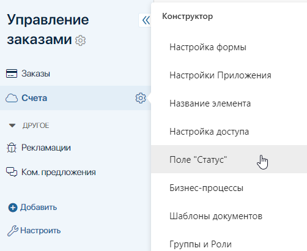
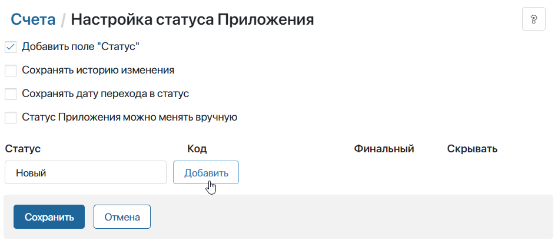
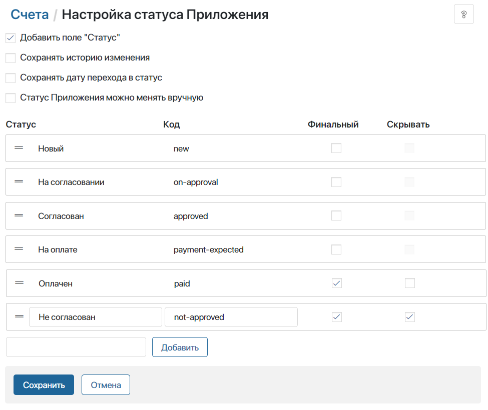
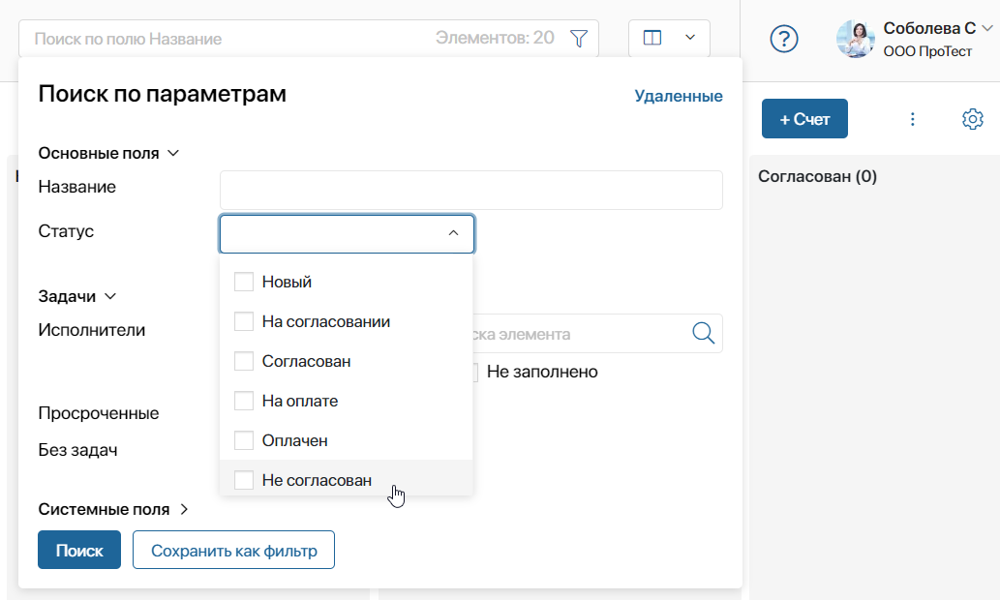
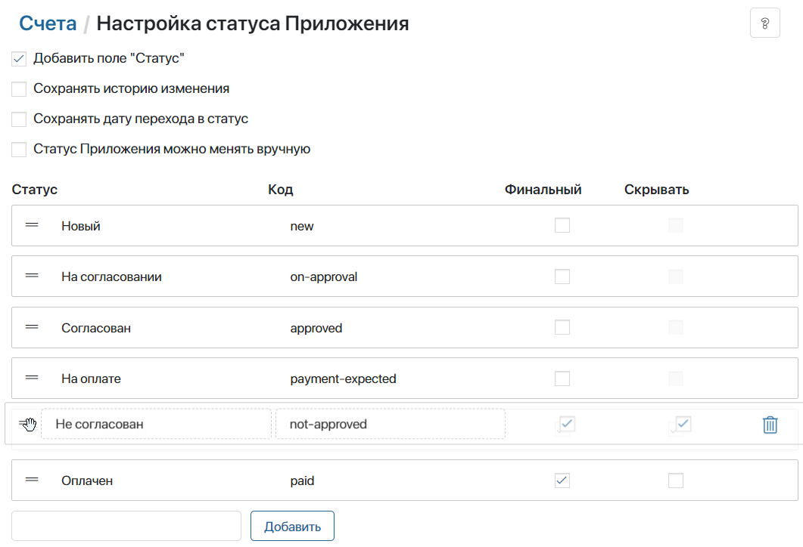
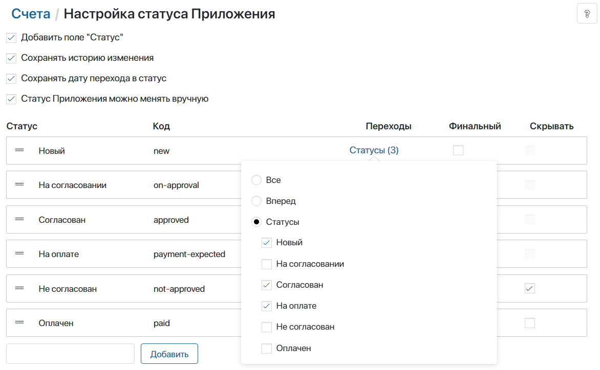
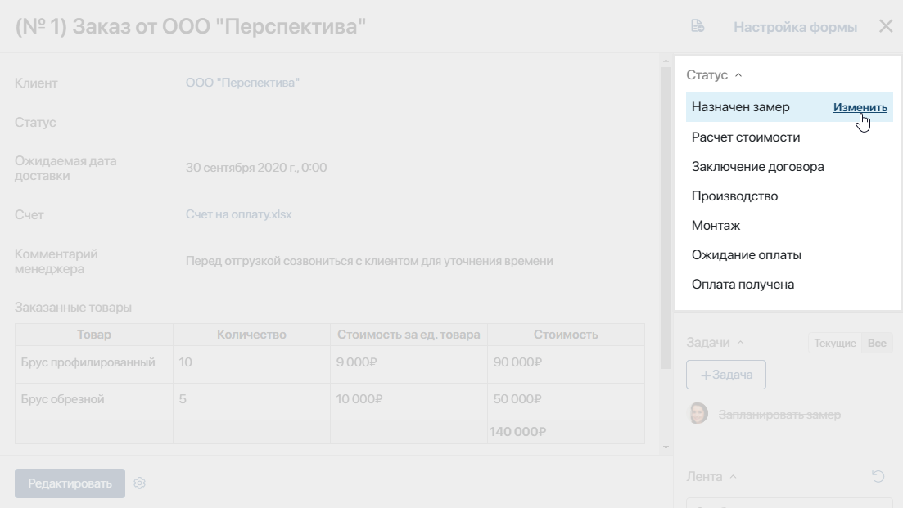
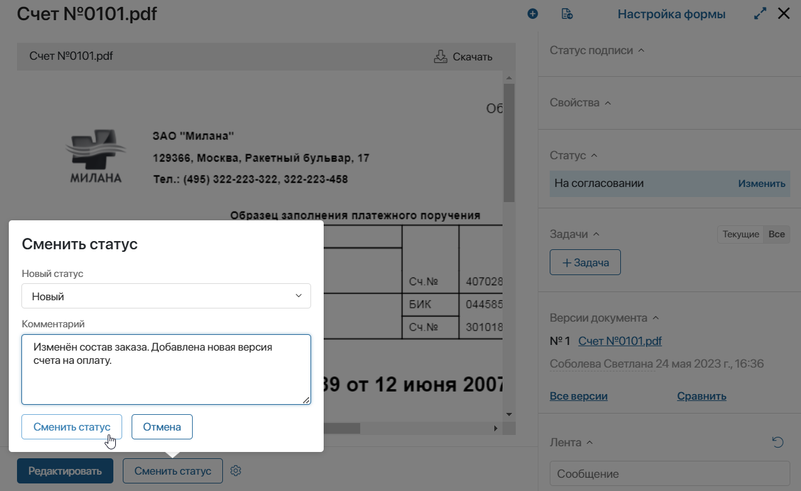
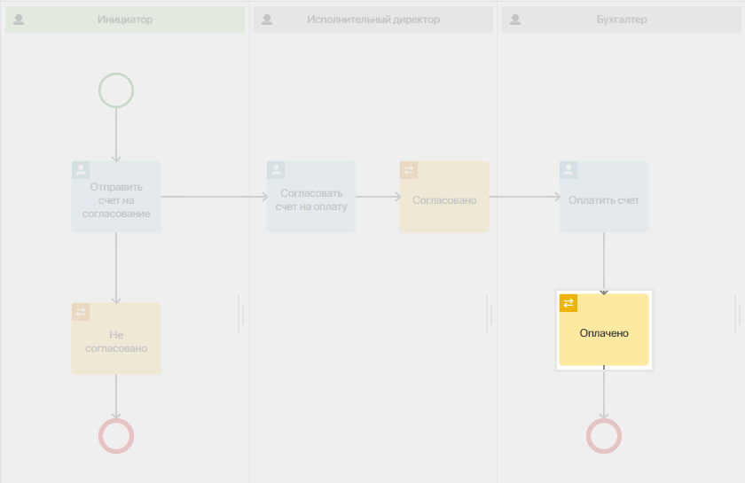

Статусы предназначены для отслеживания текущего состояния элемента приложения.
Например, для приложения Счета на оплату можно настроить статусы: Новый, На согласовании, Согласован, На оплате, Оплачен и Не согласован. С их помощью пользователи смогут понимать, на каком этапе работы находится тот или иной счёт.
Статусы можно менять вручную по завершении определённого этапа работы либо автоматически в рамках бизнес-процесса.
Создать статусы приложения
начало внимание
Создавать и редактировать статусы приложения могут только пользователи, включённые в группу Администраторы.
конец внимание
Это можно сделать двумя способами:
- Перейдите в приложение, нажмите на значок шестерёнки рядом с его названием и выберите пункт Поле "Статус".

- Если на уровне приложения создан бизнес-процесс, откройте дизайнер процессов и перейдите на вкладку Статусы.
Статусы, настроенные со страницы приложения и в дизайнере бизнес-процесса, взаимосвязаны. Если вы внесли изменения в дизайнере, они отобразятся в настройках статусов приложения, на уровне которого создан процесс, и наоборот.
- На открывшейся странице включите опцию Добавить поле "Статус".
- В поле Статус введите название и справа от него нажмите кнопку Добавить или клавишу Enter на клавиатуре.

- Статус будет добавлен в список. Ему будет присвоен код, который используется при работе с API. Вы можете отредактировать значение в поле Код, чтобы обращаться к статусу в скриптах было проще.
- Создайте остальные статусы для данного приложения, указав их название и нажав Добавить.

На канбан-доске статусы будут отображаться в том порядке, в котором они располагаются в списке. Первый статус, указанный в списке, будет присваиваться всем новым элементам.
- Отметьте опцию Финальный напротив конечных статусов в жизненном цикле элементов приложения. После финального выставить следующий статус будет нельзя.
- Для финальных статусов доступна опция Скрывать. Включите её, чтобы элементы с этим статусом не отображались на канбан-доске. Найти скрытые элементы с финальным статусом можно через расширенный поиск, выбрав в параметрах нужный статус.

Редактирование и удаление статуса
Чтобы поменять название или код статуса, нажмите на соответствующее поле и внесите исправления. Кроме того, в любой момент можно снять или поставить флажок Финальный.
Чтобы изменить расположение статусов в списке, используйте метод Drag-and-Drop.

Чтобы удалить статус, напротив его названия нажмите на значок корзины и подтвердите действие.
Опции для настройки статусов
На странице настройки статусов вы можете включить дополнительные опции для смены и отслеживания статусов:
- Сохранять историю изменения — история смены статусов будет сохраняться и записываться в ассоциированную ленту в карточке элемента приложения. Вы сможете обращаться к этой информации через скрипт при создании своих виджетов или при настройке бизнес-процессов;
- Сохранять дату перехода в статус — дата и время смены статуса элемента будут записываться в системное поле в контексте приложения Дата перехода в статус. Вы можете вынести поле на форму элемента или на его карточку на канбан-доске. С помощью поля можно отслеживать элементы, которые долго находятся на определённом этапе работы;
- Статус Приложения можно менять вручную — пользователи смогут изменять статус элемента в его карточке или с помощью перемещения по канбан-доске.
Настройка ручной смены статуса
Чтобы пользователи могли вручную изменять статусы в карточке элемента, выполните следующие действия:
- На странице настройки статусов включите опцию Статус Приложения можно менять вручную.
- В таблице со статусами появится колонка Переходы. В ней для каждого статуса, кроме финальных, определяется последовательность смены статусов.
- По умолчанию для всех статусов в списке установлено значение Вперед. Нажмите на него, чтобы выбрать другой вариант.

- Все — пользователи смогут выбрать любой добавленный статус из списка при смене текущего;
- Вперед — пользователи смогут выбрать любой из статусов, который расположен в списке после текущего. Последовательность статусов в списке можно настроить методом Drag-and-Drop;
- Статусы — выберите опцию и отметьте статусы, которые будут доступны пользователям при смене текущего.
Для статусов, отмеченных как финальные, настроить последовательность смены нельзя.
Способы ручной смены статуса
- Изменить статус с карточки с помощью виджета Статус элемента приложения.
Виджет добавляется на форму просмотра приложения автоматически при включении ручной смены статуса. Чтобы изменить текущий статус, откройте карточку элемента. На боковой панели нажмите Изменить и выберите доступный статус из списка.

- Сменить статус перетаскиванием элементов по канбан-доске.
Перейдите на страницу приложения и включите отображение элементов в виде канбан-доски. Перетащите элемент методом Drag-and-Drop в нужный статус на доске. Статусы можно присваивать согласно настройкам переходов, установленным для каждого из них.
- Добавить на форму кнопку Сменить статус.
Откройте карточку любого элемента приложения, нажмите на значок шестерёнки в левом нижнем углу и добавьте кнопку Сменить статус. Подробнее о настройке кнопки читайте в статье «Управление кнопками в карточках элемента приложения».
Чтобы изменять статус с помощью кнопки, не требуется включать опцию ручной смены статуса в приложении. Поэтому смена статуса этим способом не учитывает установленные настройки переходов.
Пользователи могут нажать на кнопку, выбрать любой из статусов приложения и оставить комментарий, который отобразится в ленте на боковой панели элемента.

Смена статуса в бизнес-процессе
Статусы могут меняться автоматически в ходе выполнения бизнес-процесса. В зависимости от того, на каком этапе находится процесс, элемент приложения приобретает тот или иной статус. Для этого используется элемент Управление статусом.
Например, в процессе согласования счёта статус элемента приложения Счёта на оплату изменится с Согласовано на Оплачено после того, как денежные средства будут выплачены.

Новый статус отобразится в карточке элемента на странице приложения.